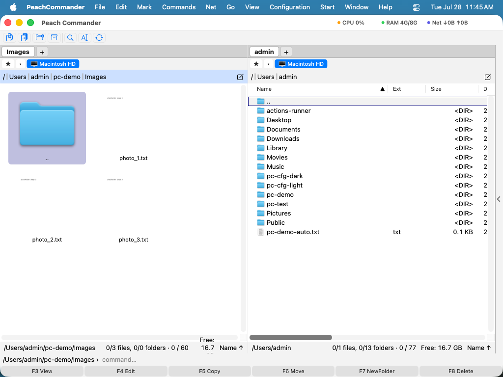

Režimy zobrazenia a triedenie
Každý panel môže zobraziť svoj priečinok v rozložení, ktoré sa hodí k úlohe: podrobný zoznam so stĺpcami, kompaktný viacstĺpcový zoznam názvov, mriežka ikon, galéria s veľkými miniatúrami, alebo strom priečinkov. Zoznam môžete tiež triediť podľa názvu, typu súboru, veľkosti alebo dátumu, vybrať presne, ktoré stĺpce sa zobrazia, a zapnúť prirodzené (číselné) triedenie, aby sa názvy s číslami zoradili tak, ako očakávate. Režim zobrazenia, poradie triedenia a stĺpce sa nastavujú pre každý panel, takže obe strany môžu vyzerať úplne inak.
Zmena režimu zobrazenia
- Kliknite na panel, ktorý chcete zmeniť, aby sa stal aktívnym.
- Otvorte ponuku Zobraziť a vyberte režim: Úplný (Podrobnosti) pre zoznam so stĺpcami, Stručný (Stĺpce) pre hustý viacstĺpcový zoznam názvov, Ikony pre mriežku ikon, Miniatúry (Galéria) pre veľké náhľady, alebo Strom pre strom priečinkov.
- Na rýchle prechádzanie režimov bez otvárania ponuky stlačte Cmd+Shift+M. Každé stlačenie prejde na ďalší režim.

(Obrázok: ten istý priečinok zobrazený ako podrobný zoznam, stručný zoznam stĺpcov, mriežka ikon a galéria miniatúr.)Triedenie zoznamu súborov
- V zobrazení Podrobnosti kliknite na hlavičku stĺpca (Názov, Typ, Veľkosť alebo Dátum) na triedenie podľa neho. Malá šípka v hlavičke zobrazuje aktuálny stĺpec a smer triedenia.
- Kliknite na tú istú hlavičku znova na obrátenie poradia.
- Môžete tiež vybrať Zobraziť > Triediť podľa a vybrať Názov, Typ súboru, Veľkosť, Dátum alebo Netriedené.
Priečinky sa vždy triedia spolu hore, pred súbormi, a položka .., ktorá vás vezme o úroveň vyššie, sa pripne prvá. Triedenie podľa názvu alebo typu súboru je predvolene vzostupné (od A po Z); triedenie podľa veľkosti alebo dátumu je predvolene najnovšie alebo najväčšie prvé.
Výber zobrazených stĺpcov
- Vyberte Konfigurácia > Stĺpce….
- Zapnite alebo vypnite stĺpce a nastavte ich poradie. Dostupné stĺpce zahŕňajú Názov, Typ, Veľkosť, Dátum, Atr (atribúty), Štítky a Komentár.
- Použite zmeny. Stĺpce ovplyvňujú zobrazenie Podrobnosti aktívneho panela.
 (Obrázok: vyberte, ktoré stĺpce sa zobrazia v zobrazení Podrobnosti, a nastavte ich poradie.)
(Obrázok: vyberte, ktoré stĺpce sa zobrazia v zobrazení Podrobnosti, a nastavte ich poradie.)
Skratky
| Akcia | Skratka |
|---|---|
| Prechádzať režimy zobrazenia | Cmd+Shift+M |
| Stručné (stĺpce) zobrazenie | Ctrl+F1 |
| Úplné (podrobnosti) zobrazenie | Ctrl+F2 |
| Zobrazenie miniatúr (galéria) | Ctrl+Shift+F1 |
| Stromové zobrazenie | Ctrl+F8 |
| Triediť podľa názvu | Ctrl+F3 |
| Triediť podľa typu súboru | Ctrl+F4 |
| Triediť podľa veľkosti | Ctrl+F5 |
| Triediť podľa dátumu | Ctrl+F6 |
Tipy
- Prirodzené (číselné) triedenie je predvolene zapnuté, takže
file2je predfile10namiesto za ním. Môžete ho vypnúť v Konfigurácia > Možnosti v nastaveniach zobrazenia. - Stĺpec môžete v zobrazení Podrobnosti rozšíriť alebo zúžiť potiahnutím deliacej čiary medzi hlavičkami stĺpcov.
- Ak používate klávesovú navigáciu macOS (Nastavenia systému ▸ Klávesnica), patrí rada Ctrl+F1 až Ctrl+F8 systému — riadok ponúk, Dock, panel nástrojov — a k Peach Commanderu sa nikdy nedostane. Prepnite v nastaveniach schému klávesov na macOS: režimy zobrazenia sú potom na Cmd+1, Cmd+2 a Cmd+3 a zoradenie na Alt+Cmd+1 až Alt+Cmd+4.
- Režim zobrazenia, poradie triedenia a výber stĺpcov sa pamätajú pre každý panel, takže môžete mať jednu stranu ako podrobný zoznam a druhú ako fotogalériu.